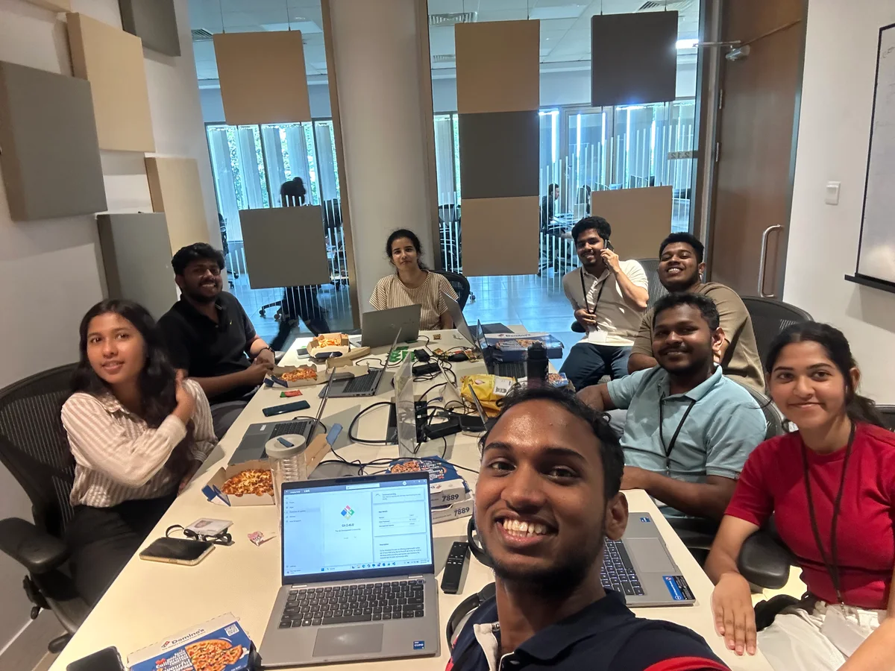

As a part of my internship at LSEG, we participated in a hackathon competing against other interns from Sri Lanka, and India. We made a team with other interns working in the London Stock Exchange (LSE) project and called it HackXChange. The task was to build a LLM based solution to provide analytics on a provided dataset. Commentary, Forecasts and other analytical features. However, the analytics had to be based on statistics, no LLM. We worked on it for two days; it was one of the most memorable moments of my internship. There was an evaluation where we had to present our solution and answer the questions from the panel. And after deliberation, we were announced the winner of the 2026 Intern Hackathon. I learned how to work with LLM APIs and to add guardrails to LLMs so that they don’t hallucinate, which is critical in these applications.
We won the intern hackathon!

